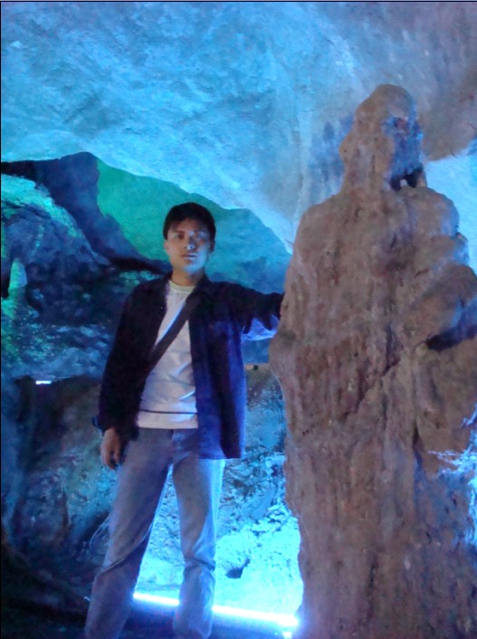

本人照片
首页
抱朴守静
#1 本人照片 作者：松痕 发表时间：2007-5-10 9:49:35
ＣＣ
#2 Re:本人照片 作者：江南新绿 发表时间：2007-5-10 14:21:55
背光啊,拍摄大忌.
#3 Re:本人照片 作者：有志青年 发表时间：2007-5-10 15:43:14
是个帅锅哟
#4 Re:本人照片 作者：松痕 发表时间：2007-5-10 16:19:33
在洞里，好象只能背光了．
#5 Re:本人照片 作者：星月族 发表时间：2009-12-28 11:53:22
很高兴认识一位真实的楼主